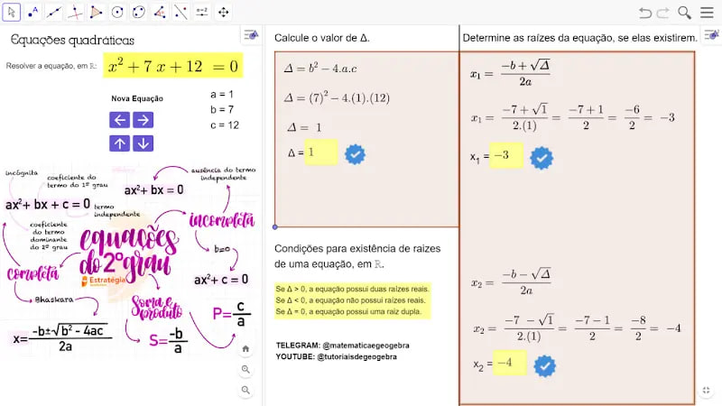
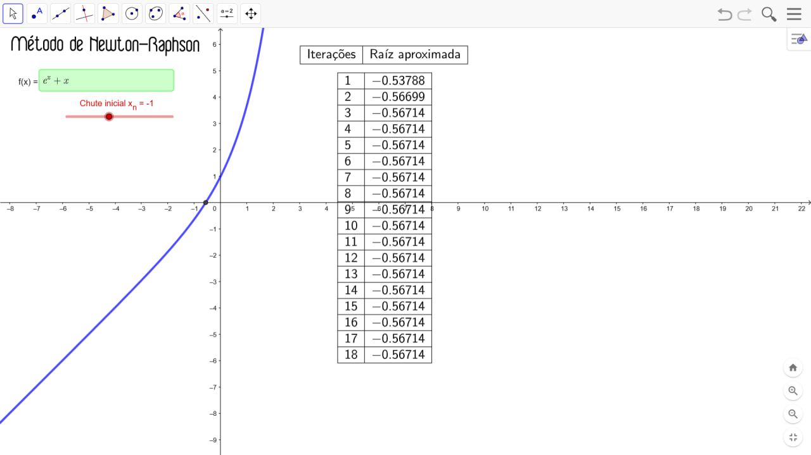
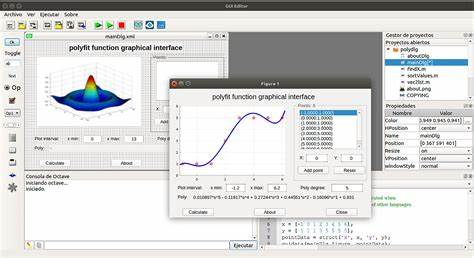

Matemática Interativa
Bem-vindo ao Matemática Interativa, um espaço onde conceitos matemáticos ganham vida por meio de applets dinâmicos no GeoGebra. Aqui, você encontrará recursos visuais e interativos que facilitam a compreensão de diversos tópicos, como o Método de Newton-Raphson, Integrais Definidas e Geometria Analítica.

Acessar applet sobre Equa√ß√µes QuadráticasüìöeBooks para Aprender GeoGebra
Os eBooks de GeoGebra são guias completos para explorar a matemática de forma interativa. Eles fornecem explicações detalhadas, exemplos práticos e exercícios dinâmicos que ajudam no aprendizado de conceitos matemáticos utilizando o GeoGebra.
Com esses eBooks, você poderá aprender desde conceitos básicos até tópicos avançados, incluindo:
- Construção de gráficos e funções
- Geometria dinâmica e transformações
- Aplicação do GeoGebra em Cálculo e Álgebra
- Simulações interativas para ensino e aprendizagem
Seja você um estudante, professor ou entusiasta da matemática, esses materiais vão ajudar a transformar o aprendizado em uma experiência visual e intuitiva!

üìäO que são Applets Interativos?

Método de Newton-Raphson (acessar applet)Os applets interativos do GeoGebra são pequenas aplicações dinâmicas que permitem explorar conceitos matemáticos de forma visual e intuitiva. Diferente de materiais estáticos, esses applets possibilitam que o usuário manipule variáveis, deslize controles e visualize mudanças em tempo real, tornando o aprendizado mais envolvente e eficaz.
Com esses recursos, é possível explorar desde operações básicas até conceitos mais avançados, como:
- ✔ Resolução de Equações (ex: Método de Newton-Raphson)
- ✔ Cálculo de Integrais Definidas
- ✔ Geometria Analítica e Transformações
- ✔ Probabilidade e Estatística
- ✔ Matrizes e Sistemas Lineares
Essas ferramentas são ideais para estudantes, professores e entusiastas da matemática que desejam visualizar fenômenos matemáticos de maneira interativa, reforçando o entendimento e aprimorando a intuição matemática.
O que podemos fazer no MATLAB?
üìä Cálculos e Análises Num√©ricas
- ✅ Gerar gráficos 2D e 3D
- ✅ Criar animações científicas
- ✅ Visualizar funções matemáticas e dados experimentais
- ✅ Treinar modelos de aprendizado de máquina
- ✅ Implementar redes neurais e deep learning
- ✅ Processamento de sinais e imagens
- ✅ Simular circuitos elétricos
- ✅ Analisar sistemas dinâmicos e controle
- ✅ Resolver equações diferenciais e sistemas dinâmicos
- ✅ Criar interfaces gráficas (GUI)
- ✅ Desenvolver aplicativos interativos para cálculos científicos
- ✅ Simular fenômenos físicos

ü§ñ Machine Learning e Intelig√™ncia Artificial
üî¨ Engenharia e Ci√™ncia Aplicada
üéÆ Simula√ß√µes e Aplica√ß√µes Interativas
Drive de livros de exatas
Download de livros de exatas (inglês/espanhol)
Provas de Vestibular e exercícios resolvidos de Geometria Plana
Acessar exercícios resolvidos em (pdf)
Comentários
 GeoGebra Oficial
GeoGebra Oficial
 Geogebra
Geogebra